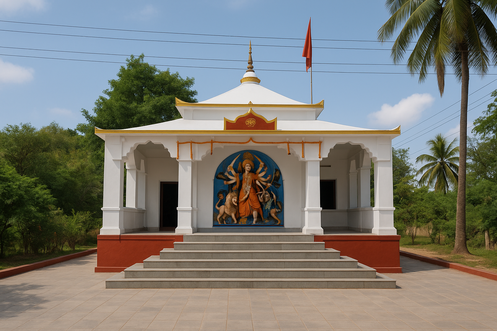

Dedicated To Serving The Community
Since 1948, Protappur Baroari Durga Puja Committee has been managed by dedicated members working together to preserve our religious and cultural heritage.
A Message From The President
Welcome to Protappur Baroari Durga Puja Committee
Our mission is to preserve our traditions, serve devotees and strengthen community harmony.
With the blessings of Maa Durga and the support of every villager, we continue this sacred journey.
Together, we remain committed to preserving our religious, cultural and social heritage for future generations.
— PresidentMeet Our Office Bearers
The committee members work together with dedication to preserve the traditions of Protappur Baroari Durga Puja Committee and serve the community.
Arindam Upadhyay
PresidentProvides overall leadership and guidance to the committee while preserving the spiritual and cultural heritage.

Sujit Kumar Ghosh
SecretaryOversees administration, meetings, official records and communication.

Sanjib Mondal
TreasurerManages accounts, donations, budgeting and financial transparency.
Serving With Devotion
The Strength Behind Every Festival
Every successful celebration is made possible through the dedication, hard work and selfless service of our volunteers.
Sanju Sarkar
Festival ManagementKajal Santara
Decoration TeamAkash Ghosh
Prasad DistributionGopal Khamaru
Security & Crowd ManagementUday Mondal
Cultural ProgrammeRaja Mondal
Media & PhotographyWhat We Stand For
Faith & Dedication
Serving Maa Durga with faith and dedication.
Unity
Working together for the betterment of our village and community.
Service
Serving devotees with humility, love and respect.
Heritage
Preserving the legacy of our temple for future generations.
Serving Since 1948
Serve With Us
If you wish to contribute your time, skills or support to the annual festivals and temple activities, we warmly welcome you to become a volunteer of Protappur Baroari Durga Puja Committee.